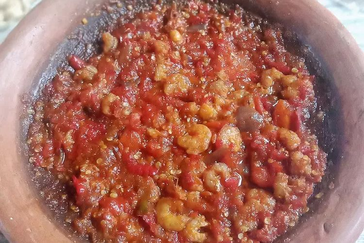

Zefanya's
Food
Sambel Gami
The iconic food from Bontang. It's best served with Bawis fish, but it's commonly served with fishes, chicken, and seafood.
Even though this food is famous in the whole East Kalimantan, the best tasting ones are always made in Bontang.
Most of the ingredients are easy to find, like pepper, tomato, onion, and other ingredients that's used to make pepper sauce.
But the one ingredients that make this food iconic and only taste good when made in Bontang is shrimp paste and peeled shrimp.
This is because Bontang sealife produces the best both sea ingredients like shrimp paste and food like fishes.